# suppressWarnings({
# if (!require("BiocManager"))
# install.packages("BiocManager", "Gviz")
# })
if (!require("BiocManager"))
install.packages("BiocManager", "Gviz")
#BiocManager::install("dplyr")
#BiocManager::install("Gviz")Gviz
PLotting data and annotation information along genomic coordinates
Based on User Guide by Florian Hahne1 and Robert Ivánek2,3 1 Novartis Institute for Biomedical Research, Basel, Switzerland 2 Department of Biomedicine, University of Basel, Basel, Switzerland 3 Swiss Institute of Bioinformatics, Basel, Switzerland
Introduction
The Gviz package (Hahne and Ivanek 2016) aims to close this gap by providing a structured visualization framework to plot any type of data along genomic coordinates. It is loosely based on the GenomeGraphs package by Steffen Durinck and James Bullard, however the complete class hierarchy as well as all the plotting methods have been restructured in order to increase performance and flexibility. All plotting is done using the grid graphics system, and several specialized annotation classes allow to integrate publicly available genomic annotation data from sources like UCSC or ENSEMBL.
Concepts
- Individual types of genomic features or data are represented by separate tracks.
- AnnotationTrack
- GenomeAxisTrack
- IdeogramTrack
- GeneRegionTrack
- SequenceTrack
- DataTrack
When combining multiple objects, the individual tracks will always share the same genomic coordinate system.
Tracks may contain information for multiple chromosomes, however most of this is hidden except for the currently active chromosome during a given plotting operation.
In Bioconductor, genomic features consisting of start and stop coordinates are most often represented as run-length encoded vectors, e.g. IRanges and GRanges classes.
Bioconductor: open source software for Bioinformatics
Load libraries
suppressWarnings({
library(BiocManager)
library(GenomicRanges)
library(Gviz)
library(biomaRt)
library(rtracklayer)
})Annotation Track: AnnotationTrack()
Generate Track for CpG Islands and plot
Import data on CpG islands
data(cpgIslands)
class(cpgIslands)[1] "GRanges"
attr(,"package")
[1] "GenomicRanges"Inspect GRanges object
cpgIslandsGRanges object with 10 ranges and 0 metadata columns:
seqnames ranges strand
<Rle> <IRanges> <Rle>
[1] chr7 26549019-26550183 *
[2] chr7 26564119-26564500 *
[3] chr7 26585667-26586158 *
[4] chr7 26591772-26593309 *
[5] chr7 26594192-26594570 *
[6] chr7 26623835-26624150 *
[7] chr7 26659284-26660352 *
[8] chr7 26721294-26721717 *
[9] chr7 26821518-26823297 *
[10] chr7 26991322-26991841 *
-------
seqinfo: 1 sequence from hg19 genome; no seqlengthsRetrieve information of genome and sequence
chr <- as.character(unique(seqnames(cpgIslands)))
gen <- "hg19"
chr[1] "chr7"gen[1] "hg19"Generate Annotation Track
atrack <- AnnotationTrack(cpgIslands, name = "CpG")Plot
plotTracks(atrack)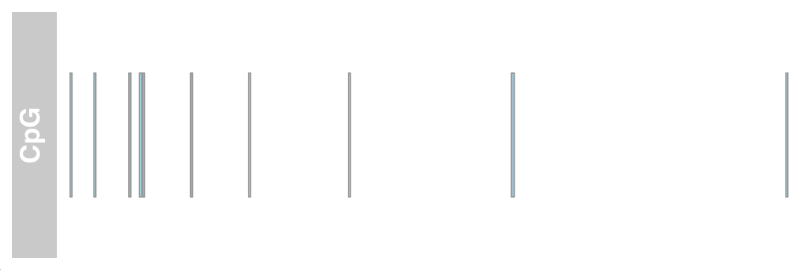
Genome Axis Track: GenomeAxisTrack()
- Display the genomic coordinates to provide reference.
- A GenomeAxisTrack object is always relative to the other tracks that are plotted.
- No need to know in advance about a particular genomic location when constructing the object. The displayed coordinates will be determined from the context, e.g., from the from and to arguments of the plotTracks function, or, when plotted together with other track objects, from their genomic locations.
Generate GenomeAxisTrack()
gtrack <- GenomeAxisTrack()Plot
plotTracks(list(gtrack, atrack))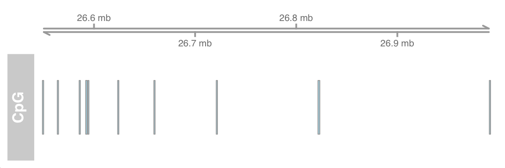
Chromosome Ideogram Track: IdeogramTrack()
- An ideogram is a simplified visual representation of a chromosome, with the different chromosomal staining bands indicated by color, and the centromere (if present) indicated by the shape.
- We can fetch the chromosome ideogram information directly from UCSC (need an established internet connection for this to work)
- Need to provide the information about a valid UCSC genome and chromosome.
- A plotted track is always defined for exactly one chromosome on a particular genome.
- The chromosomal data necessary to draw the ideogram is not part of the Gviz package itself, instead it is downloaded from an online source (UCSC).
#options(Gviz.ucscUrl="http://genome-euro.ucsc.edu/cgi-bin/")Check if you are able to generate the ideogram track. If yes, you can add this track every time you call the function plotTracks().
#itrack <- IdeogramTrack(genome = gen, chromosome = chr)plotTracks(list(gtrack, atrack))#plotTracks(list(itrack, gtrack, atrack))Let’s explore the environment and objects so far!
- Check the environment
ls()[1] "atrack" "chr" "cpgIslands" "gen" "gtrack" - Check the objects
atrackAnnotationTrack 'CpG'
| genome: hg19
| active chromosome: chr7
| annotation features: 10atrack@rangeGRanges object with 10 ranges and 4 metadata columns:
seqnames ranges strand | feature group id
<Rle> <IRanges> <Rle> | <character> <character> <character>
[1] chr7 26549019-26550183 * | unknown 1 unknown
[2] chr7 26564119-26564500 * | unknown 2 unknown.1
[3] chr7 26585667-26586158 * | unknown 3 unknown.2
[4] chr7 26591772-26593309 * | unknown 4 unknown.3
[5] chr7 26594192-26594570 * | unknown 5 unknown.4
[6] chr7 26623835-26624150 * | unknown 6 unknown.5
[7] chr7 26659284-26660352 * | unknown 7 unknown.6
[8] chr7 26721294-26721717 * | unknown 8 unknown.7
[9] chr7 26821518-26823297 * | unknown 9 unknown.8
[10] chr7 26991322-26991841 * | unknown 10 unknown.9
density
<numeric>
[1] 1
[2] 1
[3] 1
[4] 1
[5] 1
[6] 1
[7] 1
[8] 1
[9] 1
[10] 1
-------
seqinfo: 1 sequence from hg19 genome; no seqlengths#itrack@bandTable#itrack@rangeExercise 1
Change the order of the objects plotted
Gene Model information: GeneRegionTrack()
- Display information on gene structure from local source or online resources like UCSC and Ensembl
Load gene model data from a stored data.frame
data(geneModels)
head(geneModels,2) chromosome start end width strand feature gene
1 chr7 26591441 26591829 389 + lincRNA ENSG00000233760
2 chr7 26591458 26591829 372 + lincRNA ENSG00000233760
exon transcript symbol
1 ENSE00001693369 ENST00000420912 AC004947.2
2 ENSE00001596777 ENST00000457000 AC004947.2Generate Track and plot
grtrack <- GeneRegionTrack(geneModels, genome = gen,
chromosome = chr, name = "Gene Model")
#plotTracks(list(itrack, gtrack, atrack, grtrack))
plotTracks(list( gtrack, atrack, grtrack))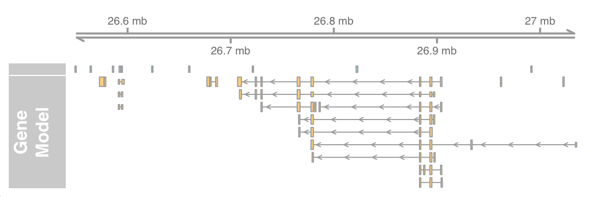
head(geneModels,2) chromosome start end width strand feature gene
1 chr7 26591441 26591829 389 + lincRNA ENSG00000233760
2 chr7 26591458 26591829 372 + lincRNA ENSG00000233760
exon transcript symbol
1 ENSE00001693369 ENST00000420912 AC004947.2
2 ENSE00001596777 ENST00000457000 AC004947.2Zoom in to the region
plotTracks(list(gtrack, atrack, grtrack),
from = 26700000, to = 26750000)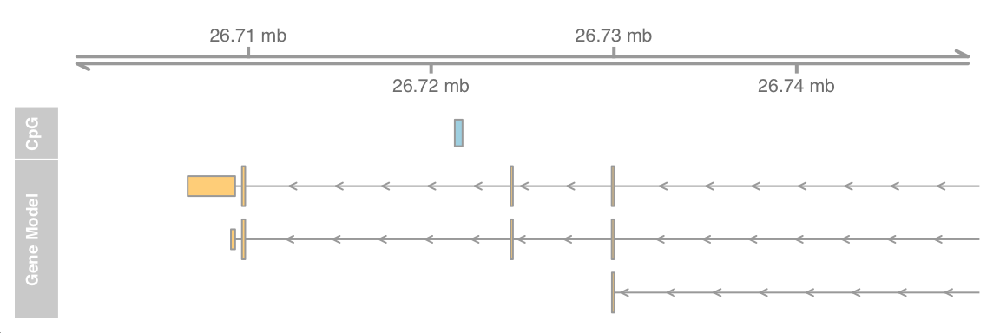
The layout of the gene model track has changed depending on the zoom level. This is a feature of the Gviz package, which automatically tries to find the optimal visualization settings to make best use of the available space.
Display the Genomic Sequence at a given position: SequenceTrack()
- The track class SequenceTrack can draw the necessary sequence information from one of the BSgenome packages.
- Create track for a specific chromosome
library(BSgenome.Hsapiens.UCSC.hg19)
strack <- SequenceTrack(Hsapiens, chromosome = chr)
plotTracks(list(gtrack, atrack, grtrack, strack),
from = 26591822, to = 26591852, cex = 0.8)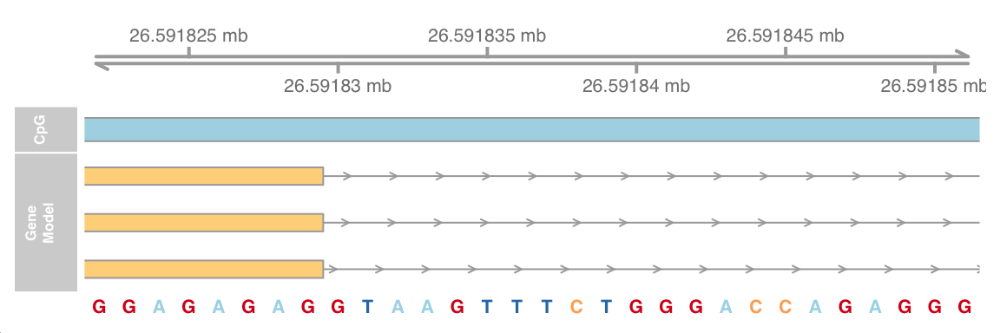
Incoorporate Data: DataTrack()
- Annotate genomic coordinate plots with real numeric data
- Different visualization options for these tracks, from dot plots to histograms to box-and-whisker plots.
- The individual rows in a numeric matrix are considered to be different data groups or samples, and the columns are the intervals in the genomic coordinates.
set.seed(255)
lim <- c(26700000, 26750000)
coords <- sort(c(lim[1],
sample(seq(from = lim[1], to = lim[2]), 99),
lim[2]))
dat <- runif(100, min = -10, max = 10)
dtrack <- DataTrack(data = dat, start = coords[-length(coords)],
end = coords[-1], chromosome = chr, genome = gen,
name = "Uniform")
plotTracks(list(gtrack, atrack, grtrack, dtrack),
from = lim[1], to = lim[2])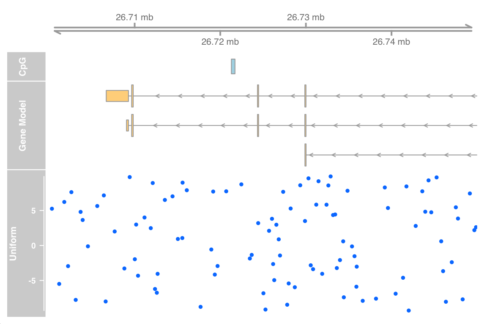
Change plot type to histogram
plotTracks(list(gtrack, atrack, grtrack, dtrack),
from = lim[1], to = lim[2], type = "histogram")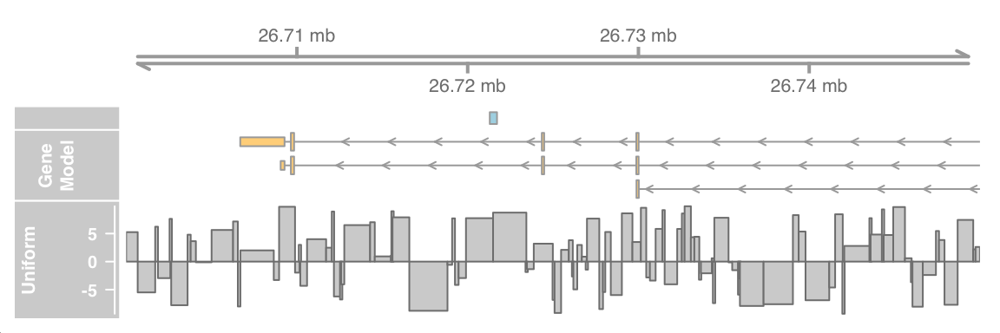
Case Use of the DataTracks + Display the coverage of NGS reads along a chromosome + Show the measurement values of mapped probes from a microarray experiment
Global Control Parameters
1. Specify parameters during Track generation
grtrack <- GeneRegionTrack(geneModels, genome = gen, chromosome = chr,
name = "Gene Model",
transcriptAnnotation = "symbol",
background.title = "brown")
plotTracks(list(gtrack, atrack, grtrack))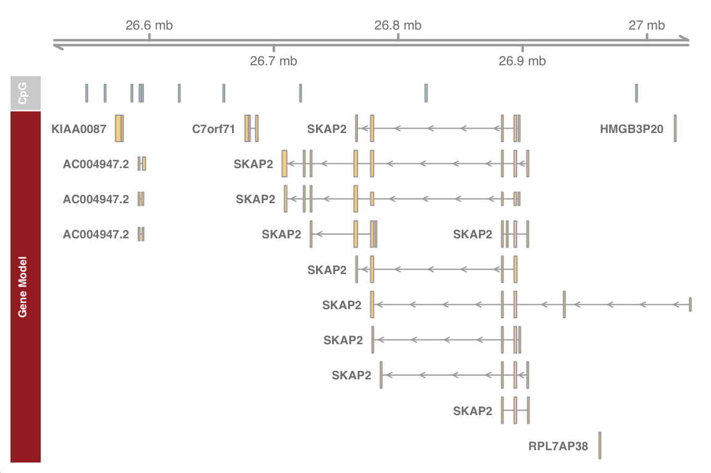
2. Modify parameters with displayPars()
Display track parameters
head(displayPars(grtrack))Modify parameters for background colors in the GeneRegion track
displayPars(grtrack) <- list(background.panel = "#FFFEDB", background.title = "darkorange")plotTracks(list(gtrack, atrack, grtrack))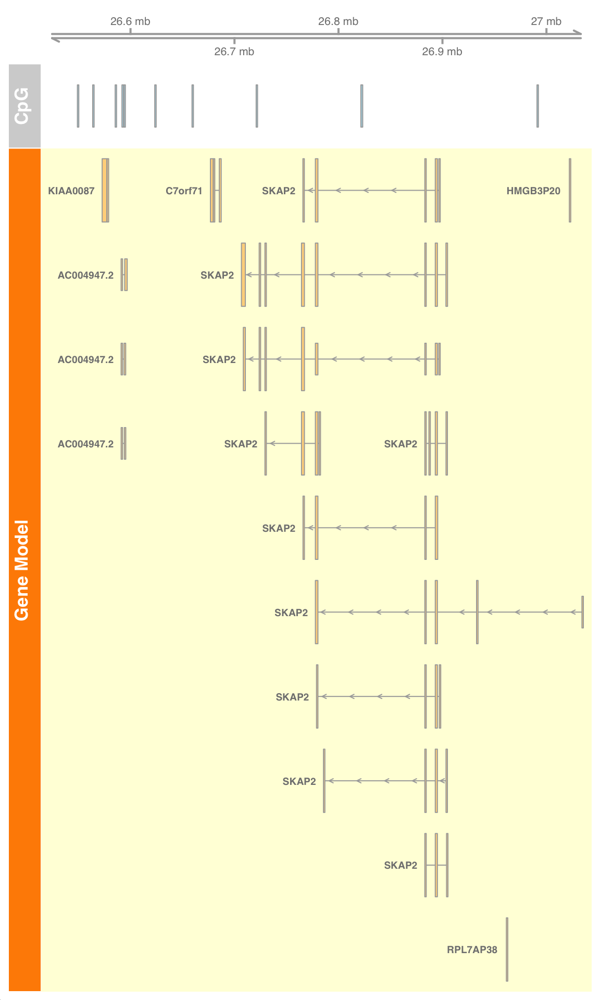
3. Set display parameters for a single plotting operation
- By passing in additional arguments to the plotTracks function, instead of the permanent setting in the track object
plotTracks(list(gtrack, atrack, grtrack),
background.panel = "#FFFEDB", background.title = "darkblue", fontcolor.title='white')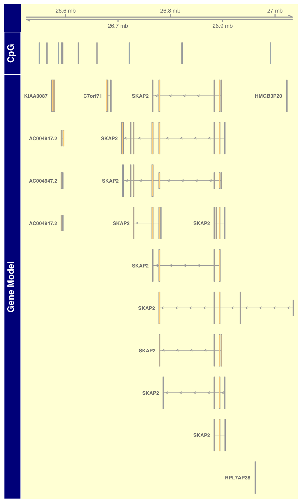
Tip!
The availableDisplayPars function prints out the available parameters for a class as well as their default values in a list-like structure.
Exercise 2
Change the color of the font title: - 1. In the GeneRegion track - 2. In all tracks
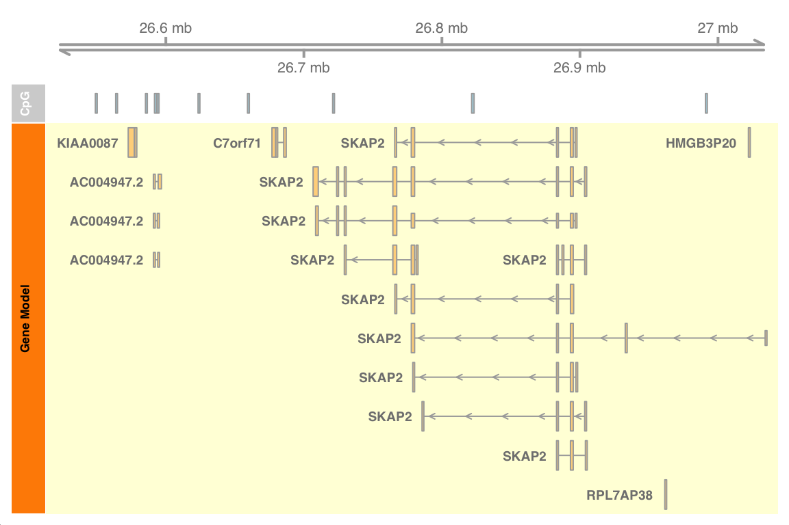
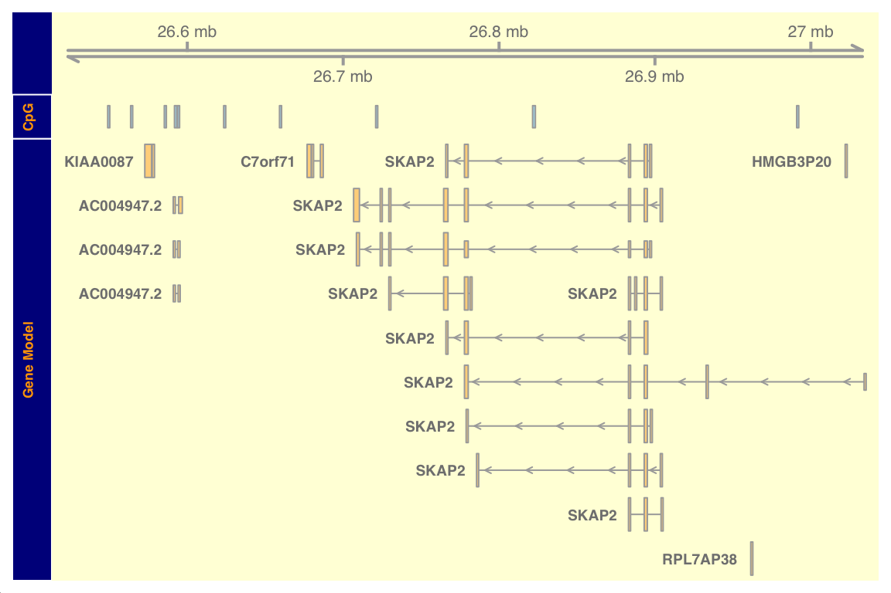
Parameters for Data Track
- To display one or several numeric values that are associated to a particular genomic coordinate range
- When we need to incorporate sample group information
Input
- a set of ranges, either in the form of an IRanges or GRanges object
- a numeric vector (or matrix) of the same length as the number of ranges
Import data on multiple replicates for control and treated samples
data(twoGroups)
twoGroupsGRanges object with 25 ranges and 6 metadata columns:
seqnames ranges strand | control control.1 control.2 treated
<Rle> <IRanges> <Rle> | <numeric> <numeric> <numeric> <numeric>
[1] chrX 1-30 * | -8.961260 -7.65790 9.879565 -5.84376
[2] chrX 42-71 * | -4.211471 4.68826 -1.053306 1.03084
[3] chrX 84-113 * | 2.287112 8.01327 -7.121998 -4.46718
[4] chrX 125-154 * | 9.209838 -6.23243 8.596822 -6.32041
[5] chrX 167-196 * | 0.406842 -7.05442 -0.551974 9.36363
... ... ... ... . ... ... ... ...
[21] chrX 833-862 * | 2.712424 7.538538 6.56281 -3.42396
[22] chrX 875-904 * | 0.727043 -0.950022 -7.63786 -28.96335
[23] chrX 916-945 * | 7.386881 4.817002 3.64004 -7.59088
[24] chrX 958-987 * | -5.541625 -2.231180 -4.65625 7.04730
[25] chrX 1000-1029 * | -1.139128 2.861125 8.17754 -5.34925
treated.1 treated.2
<numeric> <numeric>
[1] 9.71353 9.993286
[2] -6.77430 0.593712
[3] -4.05888 8.053195
[4] -1.56806 3.511461
[5] -4.88057 1.552880
... ... ...
[21] -25.015912 -14.86389
[22] -15.066067 -26.36181
[23] 5.146919 -5.80432
[24] -7.555974 -8.46894
[25] 0.874496 -6.32031
-------
seqinfo: 1 sequence from hg19 genome; no seqlengthsdTrack <- DataTrack(twoGroups, name = "uniform")
plotTracks(dTrack)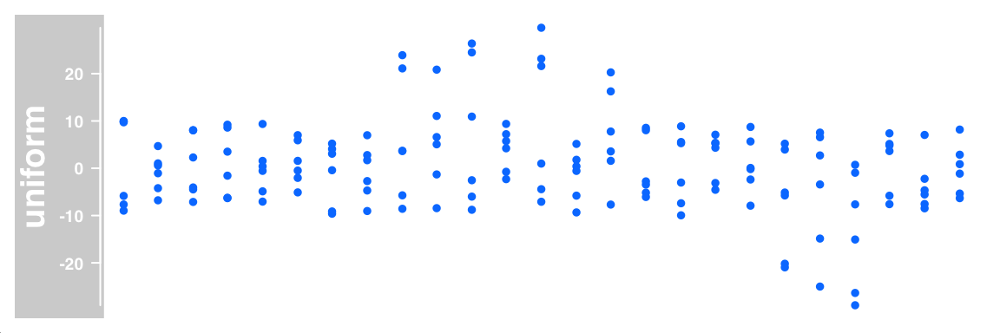
plotTracks(dTrack, type = c("boxplot", "a", "g"))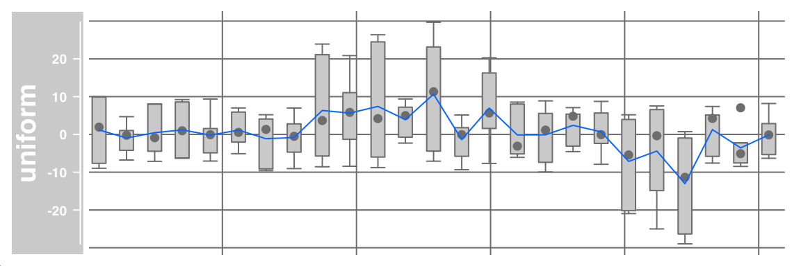
colnames(mcols(twoGroups))[1] "control" "control.1" "control.2" "treated" "treated.1" "treated.2"plotTracks(dTrack, type = c("heatmap"), showSampleNames = TRUE,
cex.sampleNames = 0.6)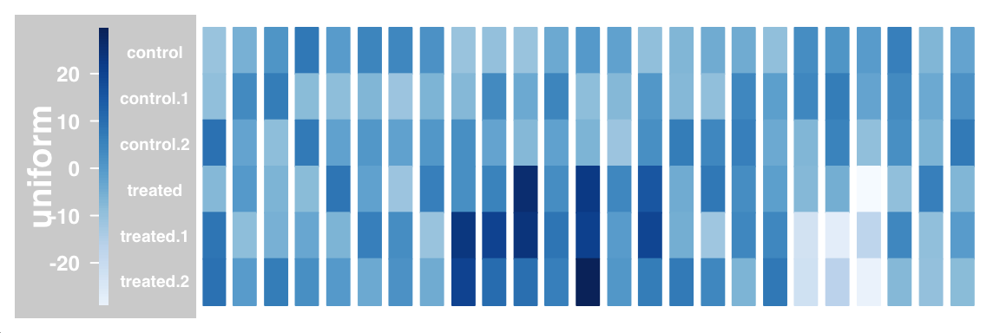
Integrate information of data grouping
- Samples are grouped together based on a factor variable (e.g. control, treated).
- The grouping is reflected in the layout of the respective track types.
- Grouping is not supported for all plotting types
plotTracks( dTrack,
groups = rep(c("control", "treated"), each = 3),
type = c("a", "p", "confint"),
from=1, to=1030, genome='hg19', chromosome='chrX'
)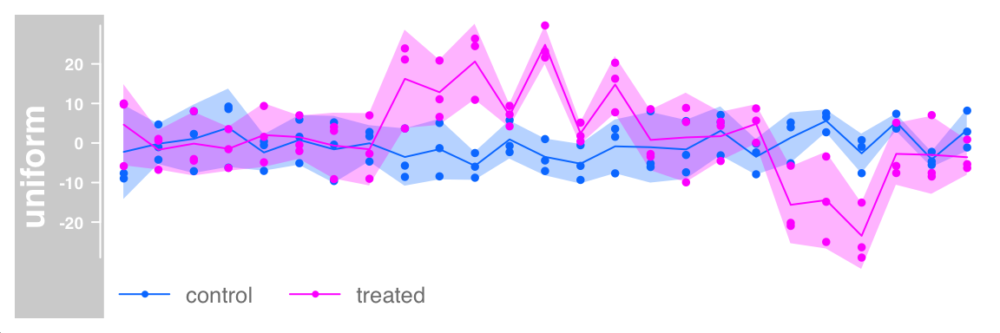
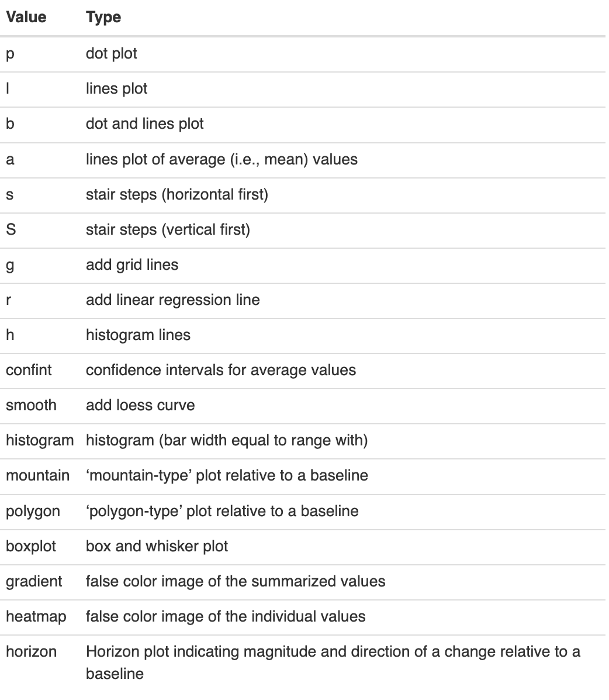
Exercise 3
Display tracks for chromosome ideogram and genome coordinates
Tip: Check the chromosome!
Parameters for Alignment Track
afrom <- 44945200
ato <- 44947200
alTrack <- AlignmentsTrack(
system.file(package = "Gviz", "extdata", "snps.bam"), isPaired = TRUE)
plotTracks(alTrack, chromosome = "chr21", from = afrom, to = ato)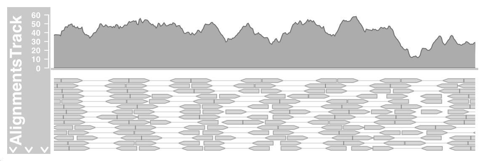
plotTracks(alTrack, strack, chromosome = "chr21", from = afrom, to = ato)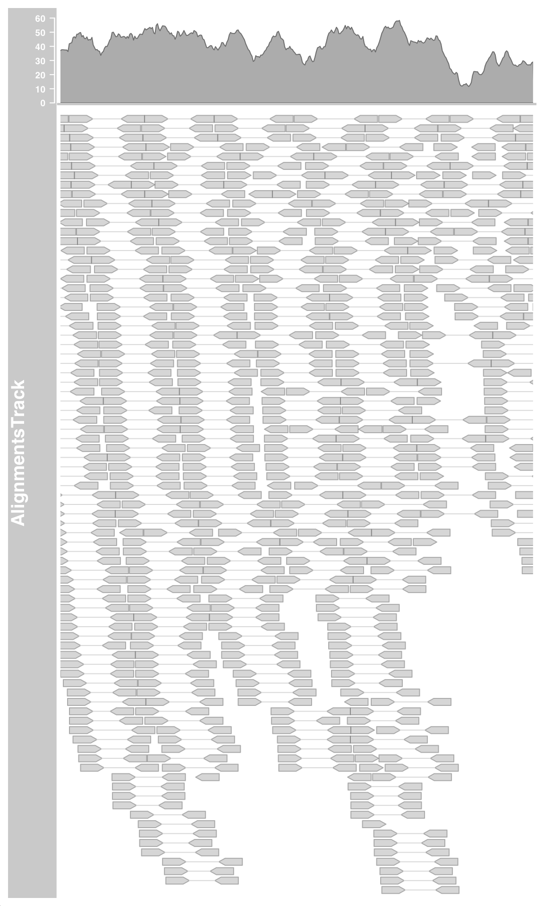
plotTracks(c(alTrack, strack), chromosome = "chr21",
from = 44946590, to = 44946660)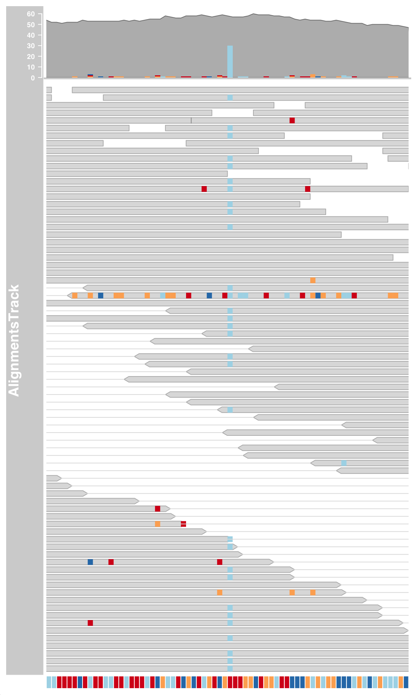
plotTracks(c(alTrack, strack), chromosome = "chr21", from = 44946590,
to = 44946660, cex = 0.5, min.height = 8)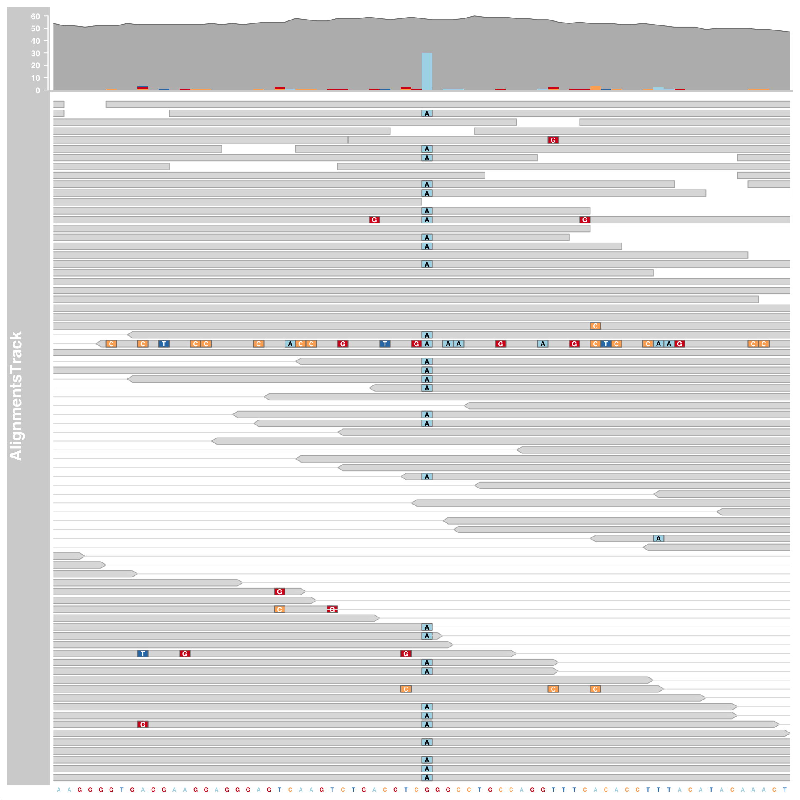